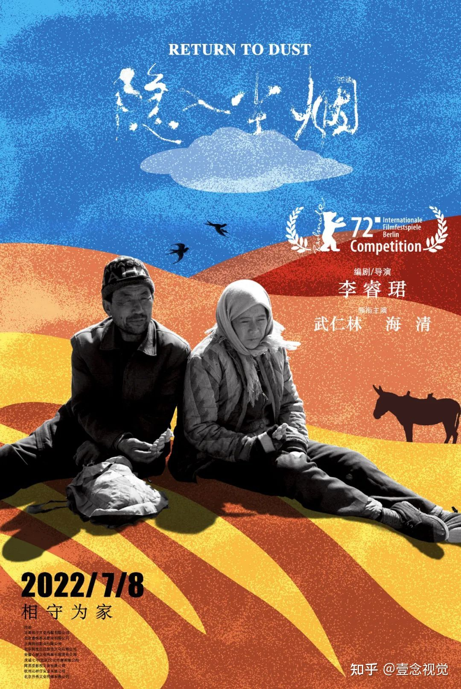

曹贵英（海清饰）常年在哥哥嫂子家过着被人嫌弃的生活，住在风吹雨淋的木棚，气虚体寒，一条腿还瘸了，干不了重体力活。她患有尿路疾病，不分时间场合都会小便失禁。由于没有生育能力，她在农村的婚恋市场处于食物链底层。贵英经哥哥嫂子的“安排”被介绍给邻村的大龄单身汉马有铁（武仁林饰）。
马有铁排行老四，哥哥马有金、马有银都已经去世，尽管三哥马有铜日子过得不错，但他只能寄居在村里被弃置的空屋中，守着一头驴子过日子，被村里人笑称为“没有比你更穷的”。和贵英结婚之后，马有铁的日子一下子充满了盼头。他并不嫌弃贵英身体的疾病和残疾，勤奋种地，甚至还养了一窝鸡，想攒钱给贵英治病。村里收粮的老板得了怪病，需要大量输血。但是全村是“熊猫血型”的偏偏只有马有铁。为了让老板病好起来，还上拖欠全村人的粮钱，善良的马有铁开始给老板无偿献血。又要献血又要种地，马有铁的日子十分辛苦。
祸不单行，村子里开始有偿拆除空屋，马有铁和贵英即将无家可归。他决心自己盖房子，一砖一瓦地，慢慢给自己和贵英盖成了一间平房，贴上结婚时候别人送的双喜贴花，期盼日子好起来。一点一滴贵英都看在眼里，渐渐对这个安排的丈夫产生了依恋和信赖。尽管她体弱多病，并不能帮马有铁干多少活，甚至还因此偶尔被他责骂，但是婚后的生活是她一生中鲜少享受的平静。好景不长，有一天生病的贵英去田头给马有铁送饭，一时头晕掉进河里死了。丧妻的马有铁如遭雷击，他将何去何从…
西北大地种不出玫瑰，小麦印花是我最汹涌的爱意！

隐入尘烟(2022)